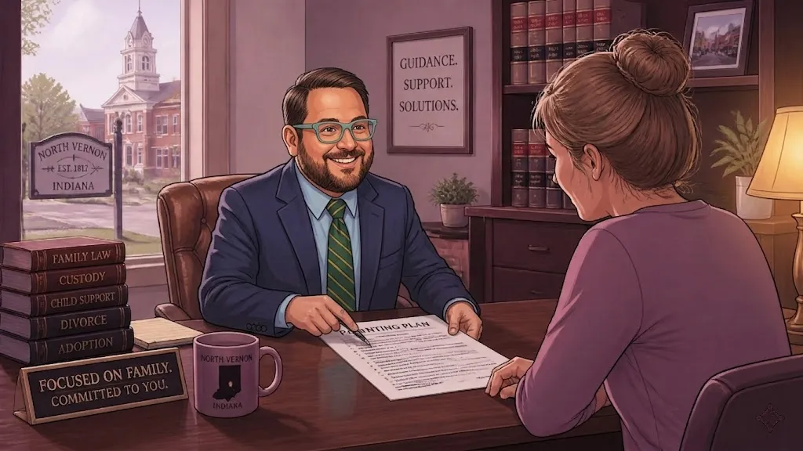

Why New "Findings of Fact" Laws Will Change the Way Attorneys in North Vernon Indiana Handle Your Custody Trial

If you live in Jennings County, you know that things change slowly. But on July 1, 2025, a big change hit the courtrooms in North Vernon and Vernon. It is called Public Law 38-2025 (or House Bill 1626 if you like the fancy names).
This law changes how custody trials work in Indiana. For years, parents often felt like the court was a "black box." You would go into a trial, tell your story, and wait. Then, a few weeks later, you would get a piece of paper that simply said who got the kids. It didn't always say why.
That is all changing. Now, judges must show their work. They have to write down exactly why they made their choice. At Chris Doran Law LLC, I believe this is a great step for families. It means you get more honesty and more answers.
Let's break down what this new law means for your family and your future.
What is a "Finding of Fact"?
Before this law, a judge could just make a ruling. They would say, "Mother gets primary custody," and that was that. Unless a lawyer specifically asked for it, the judge didn't have to explain the details.
Now, the judge must provide Findings of Fact. Think of this like a math teacher asking a student to "show your work." The judge cannot just give the answer. They have to list the facts that led them there.
A finding of fact might look like this:
"The court finds that the child has a strong bond with the father's extended family in Scipio."
"The court finds that the mother has been the one taking the child to all doctor visits in North Vernon."
"The court finds that the child is doing well in school and has many friends in Hayden."
These are specific facts based on the evidence we bring to court. When the judge writes these down, it proves they were listening. It shows that your story actually mattered.
No More Guessing Why You Won or Lost
The biggest benefit of this law is transparency. As a small town lawyer, I have sat with many parents who were confused by a court order. They would ask, "Why did the judge think I wasn't the better choice for school nights?"
In the past, sometimes we had to guess. We would look at the notes and try to figure it out. Now, we don't have to guess. The judge has to write Conclusions of Law. This means they have to explain how the facts they found fit the laws of Indiana.
If the judge decides to change custody, they have to point to things like:
The child's safety.
Which parent provides more stability.
The child's adjustment to home and school.
By seeing these reasons in writing, you get closure. Even if you don't like the decision, you will at least understand how the judge arrived at it. It takes the "mystery" out of the legal system.
How This Changes the Way We Go to Trial
Because the judge has to write everything down, my job as your attorney becomes even more important. I have to be "sharper" with the evidence.
In a custody trial in North Vernon, I can't just tell a good story. I have to "feed" the judge the specific facts they will need for their written order. I have to make it easy for the judge to see the truth.
This means we will focus even more on:
School Records. Showing how your child is thriving in local schools like those in the Jennings County School Corporation.
Safety. Providing clear proof of a safe home environment in places like Butlerville or Commiskey.
Stability. Showing that you have a plan for the child's daily routine.
At Chris Doran Law LLC, I listen to what you have to say. I wear many hats to make sure we gather every single detail. We want to give the judge a clear path to the right decision. We don't just show up and talk; we build a pile of facts that the judge can use to support your case.
Making Appeals Easier
Nobody wants to think about losing a trial. But sometimes, mistakes happen. Judges are human, too.
Before this law, it was very hard to appeal a custody case. If the judge didn't write down their reasons, it was tough to prove they made a mistake. The higher court (the Court of Appeals) would usually just assume the trial judge knew what they were doing.
Now, if a judge writes down a fact that is totally wrong, we can point to it. For example, if the judge writes that you live in a different county when you actually live in Vernon, that is a clear error. If they say there was no evidence of a certain issue, but we have the transcripts to prove there was, we have a much better chance at an appeal.
This law holds the court system accountable. It ensures that decisions are based on what really happened, not just a "gut feeling."
A Word on "Temporary" Orders
It is important to know that this new law does not apply to everything. In many custody cases, there is something called a "provisional order." This is a temporary rule the judge makes at the start of a case to keep things moving while we wait for the final trial.
The new law about written "Findings of Fact" does not apply to these temporary orders. The judge can still make quick decisions for the short term without writing a long explanation. The new rules only kick in for the final custody order or a formal modification of custody.
If you are just starting your case, you might still get a "short" order at first. But when it comes time for the big, final decision, you will get the full explanation you deserve.
Why Experience in Jennings County Matters
I have spent my career handling a wide variety of complex legal matters. I know the people of North Vernon, Scipio, and Hayden because I am part of this community.
When you are facing a custody trial in 2026, you need someone who understands these new laws. You need a lawyer who isn't just a "big city" expert but a local problem-solver. I travel to surrounding areas like Columbus and Seymour, but my heart is right here in Jennings County.
I understand that legal fees can be a worry. That is why I am always transparent about my costs, including any travel fees. I want to give you practical options that work for your family and your budget.
Let's Talk About Your Custody Case
The law is changing to give you more a voice and more answers. If you are worried about an upcoming custody trial or if you need to change a current order, I am here to help.
I don't use a lot of fancy legal talk. I just listen to your concerns and tell you what your best moves are. We will look at the facts of your life: the school, the home, the family bonds: and we will put them together in a way that the judge can't ignore.
If you have questions about how these new "Findings of Fact" laws affect you, give me a call. Let's work together to protect your kids and your rights.
Need help with a custody case in Jennings County? Contact Chris Doran Law LLC today. We can chat about your options and help you prepare for your Indiana custody hearing.